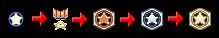
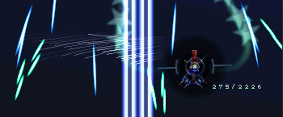
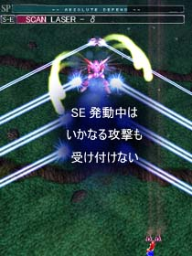
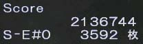
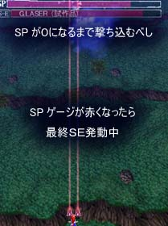
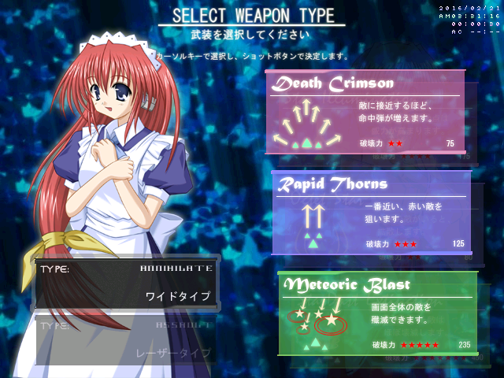
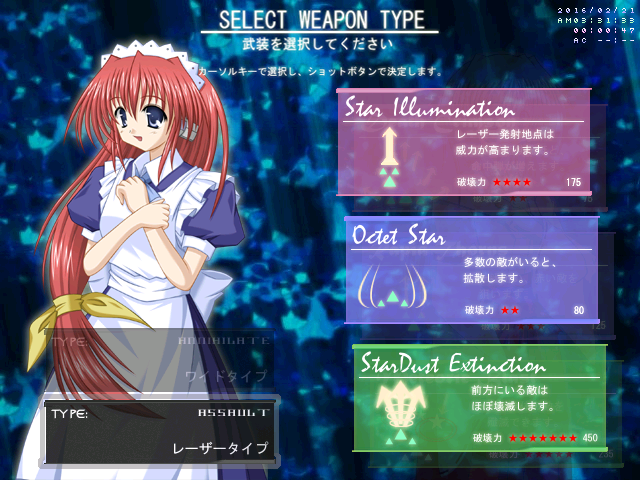
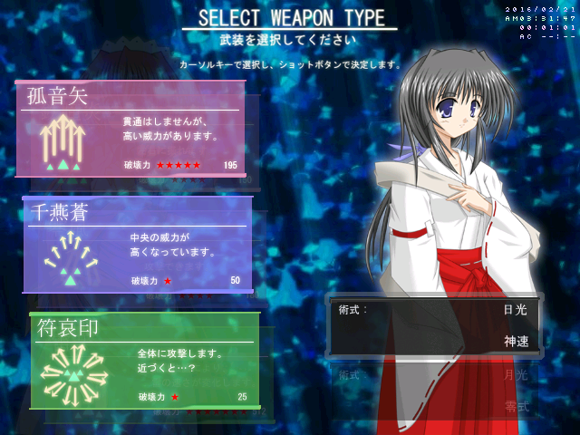
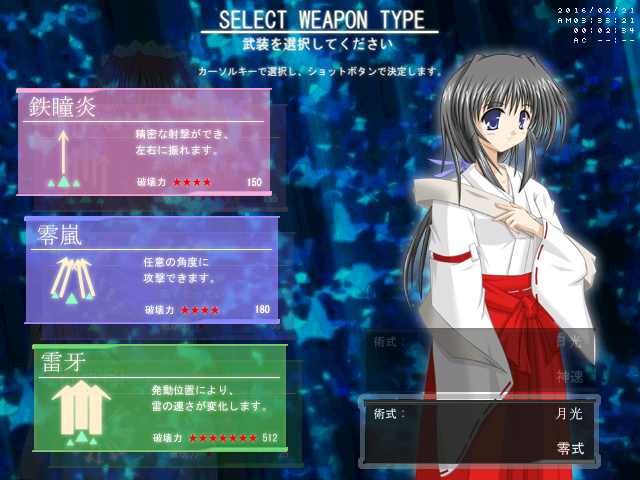

Seihou Banshiryuu C67

Contents
| 1. Items |
| 2. Grazing |
| 3. Special Equipment |
| 4. Shottypes |
Items
Items will be automatically collected when an enemy is killed in close proximity. As you collect more of the same item, the item rank will gradually increase, also changing what the items look like. The points awarded per item on each rank are as follows:
100 -> 1,000 -> 6,400 -> 12,800 -> 51,200
If an enemy is killed from a bit too far away, their item will be dropped but not automatically collected. If you fail to collect any item before it falls off-screen, your item rank will be reset and the item value will be 100 points again.
In case an enemy is killed from even further away, it will not drop any item at all.
Grazing
A counter, showing your current continuous graze and total graze points on the stage, appears as you perform continuous grazing.
It is possible to automatically collect all items on the screen by means of grazing bullets, which is having a bullet enter your 'grazebox', the area around your character in which a bullet is considered to be grazed. This area is larger when you are focused and focusing also makes the grazebox display on screen, as is depicted in the above screenshot. Bullets can be grazed only once, while lasers can be grazed indefinitely. For each graze point, 300 points are added to your score.
Special Equipment (SE)
Bosses and midbosses may use SE attacks. They have a set duration and the boss is invincible during one, as denoted by the text "-- ABSOLUTE DEFEND --" displayed on their health bar. During an SE, you should attempt to deal as much damage as possible; when an SE ends, the damage dealt to the boss during it is multiplied by 100 and added to your score. The damage dealt to the boss during an SE is displayed on the right of the screen, below your current score.
The bottom number is the current damage dealt to the boss during an SE.
There are several different kinds of SE attacks. Every boss has an opening SE, which will always be used at the start of a boss battle. Bosses also have at least one SE that is always used when the boss reaches a specific amount of health, which will cause the SE to interrupt whatever pattern it was firing. When a regular pattern ends, an SE for that specific health range will be used. This is the kind of SE that can be skipped if enough damage is dealt to the boss to bring it past that health range before their regular pattern finishes. This is the most notable in the battle against VIVIT when using Hirano, due to VIVIT's low health.
The stage 1 midboss' final (and in this case, only) SE begins.
Every boss also has a single final SE, which cannot be skipped and is used once their health bar is empty. Their health bar will be refilled with a red color when the final SE begins. If this health bar is emptied, it will say "-- OVER KILL --". The boss will explode and drop an item when the SE ends during said overkill, also awarding you the SE bonus as usual. If the bar is not emptied before the SE ends, the boss will fly off-screen and will not drop any item, nor award the SE bonus. Most of the bosses drop bomb items, exceptions being the stage 2 and 6 midbosses, which drop 1up items instead. They also award a fixed number of points for being defeated; these values are listed in the table below.
| Boss of | Name | Points |
|---|---|---|
| Stage 1 | Erich | 200,000 |
| Stage 2 | Yuuta | 200,000 |
| Stage 3 | The Tri Stars | 1,000,000 |
| Stage 4 | VIVIT / Hirano | 5,000 |
| Stage 5 | Lagunas | 1,000,000 |
| Stage 6 | Yuitia | 1,000,000 |
Yuitia, the stage 6 (final) boss of the game.
The final boss, Yuitia, has some unique properties; she does not drop any item once she explodes and cannot be damaged by bombs, which makes bombing them bad for scoring rather than good. This is referred to as Yuitia having a bombshield. Exceptions to this are the patterns that spawn missiles, because they are separate entities that can be damaged. Also, she does not have any regular attacks; all of her patterns are SE attacks. She always uses all of them, so no skipping is possible here, and she doesn't have a final SE; her last SE works the same way as a regular SE. She fires large white bullets that cannot damage you as an intermission in between her SE attacks. Her actual health bar can only barely be damaged during that, and as such, it can never be emptied. It is automatically emptied by the game when Yuitia explodes, which, in her case, always occurs once her last SE ends, regardless of how much you damaged her, so the fixed points for defeating her are always awarded.
Shottypes
Note that for every shottype, the regular shot can only hit enemies in front of you, and the focused shot automatically aims at enemies.
VIVIT-W
A shottype with slow movement speed and medium powered shots. Her regular shot covers a wide area and is inconsistent,
because the familiars change their firing direction, their shots on the side moving from left to right (independently
of your movement). It's the weakest regular shot in the game, which matters a lot because you will want to be unfocused
most of the time during the stage portions, in order to collect items and have faster movement speed than when focused.
The focused shot of VIVIT-W has is the second strongest in the game and it automatically aims at the enemy closest to you
when you start firing it, selects the next closest one when the enemy it's currently firing at dies, and so on.
Her bomb is decently powerful as well and lasts very long, which is the main selling point of VIVIT-W; it allows her to
kill enemies at point blank range that you couldn't otherwise get that close to, obtaining all their items in just a
single bomb. The slow movement speed and medium damage may seem to make VIVIT-W a suboptimal shottype to use for
scoring, but the long-lasting bomb makes up for it. Furthermore, survival-wise, her slow movement allows for precise dodging,
which is helpful during certain patterns, though you may mostly want to be fast, still, given the fast bullet speeds in most
of the game. Her bomb duration can also help her last out through patterns, having far more I-frames than other bombs.
VIVIT-A
The faster VIVIT, boasting the second fastest movement speed, the second most powerful regular shot and second weakest
focused shot. Her regular shot is very thin and does not automatically end when you let go of the shot key; the lasers
she fires will linger for a while, which is bad for scoring, since you will want to not shoot at times to avoid killing
enemies when not close enough to collect their items. The damage dealt by the shot somewhat makes up for it, although
you will always have to be directly under a boss or an enemy to hit them. VIVIT-A's focused shot is much weaker,
being less than twice as powerful, but since focusing slows down your movement, it can be used for survival reasons.
Her bomb is very powerful, being the second most powerful one in the game, and like her regular shot, it fires
straight ahead. It has a short duration, as do Hirano's bombs; VIVIT-W has the only bomb with a long duration.
All in all she is a solid shottype given her great power on her regular shot, but you will have to be cautious when
not being in point blank range while killing enemies, as well as making sure she is always directly below what you
want to deal damage to. Avoid focusing as much as possible and limit it to when it is needed for survival.
HiranoS
Arguably the best shottype in the game. Her regular shot is the most powerful shot in the game, beating not just all
regular shots, but also all focused shots. On top of this, it covers more than twice as wide an area as the powerful
shot of VIVIT-A, allowing for easier positioning to hit bosses. HiranoS also has the fastest movement speed in the
game, which is very useful, since it allows her to easily sweep across stages, quickly kill enemies with her powerful
arrows fired by her regular shot, and collect all their items. Her focused shot is very weak, being the weakest focused
shot, and as such it should only be used when necessary for survival or when it is needed to kill an enemy with; it aims
at enemies rather than firing straight ahead, which is useful in certain situations. HiranoS's bomb has her fire
omnidirectional amulets for a short duration. It deals a lot of damage on Hirano's hitbox, the spawn point of the amulets,
so you will want to sit on top of a boss when using it during a boss fight for optimal damage.
Mastering unfocused dodging is very much necessary if you want to get good with HiranoS, since that will make her deal much more
damage and achieve very high scores; her amazing damage combined with her speed is what makes her the best shottype to use overall.
HiranoO
HiranoO is a gimmicky shottype. Her regular shot is the third strongest, being twice as powerful as VIVIT-W's one but weaker
than those of VIVIT-A and HiranoS, and it bends with horizontal movement; bending to the left when you move left, and vice
versa for right. Her focused shot uses a blue field of sight that will appear on the screen when you start focusing. When an
enemy or a boss enters this field, it will be targetted and bullets will be fired at it. The field moves into the opposite
direction of your movement, making it difficult to control. HiranoO has the slowest movement speed, being slightly
slower than VIVIT-W, which does not help, and in addition to that, her regular shot is thin (like VIVIT-A's) and does
not always seem to be at its full potential when firing at a bigger enemy. In contrary, HiranoO's bomb is the strongest bomb from afar,
and it covers a wide area on the screen as well, making it an excellent way of getting rid of enemies instantly and damaging
bosses; regardless, however, she is the worst shottype in the game, due to her awkward shots and difficulty to control her
together with slow movement, that make her very poor at item collection, although her damage dealt to bosses is pretty good,
having the strongest focused shot in the game, which is the second strongest shot overall, only beaten by Hirano-S's regular shot.
Comparison
| Regular shot power | Regular shot range | Focused shot power | Bomb power | Bomb duration | |
|---|---|---|---|---|---|
| VIVIT-W | 75 | Wide | 125 | 235 | Long |
| VIVIT-A | 175 | Very narrow | 80 | 450 | Short |
| HiranoS | 195 | Narrow | 50 | 25* | Short |
| HiranoO | 150 | Very narrow | 180 | 512 | Short |
* Much higher than any other bomb in practice (if used on top of an enemy or boss)